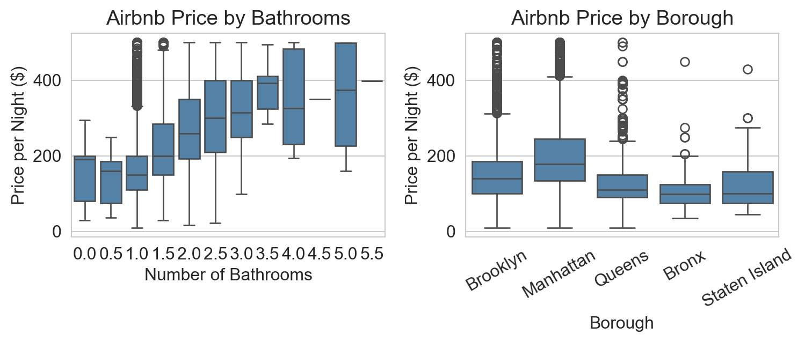
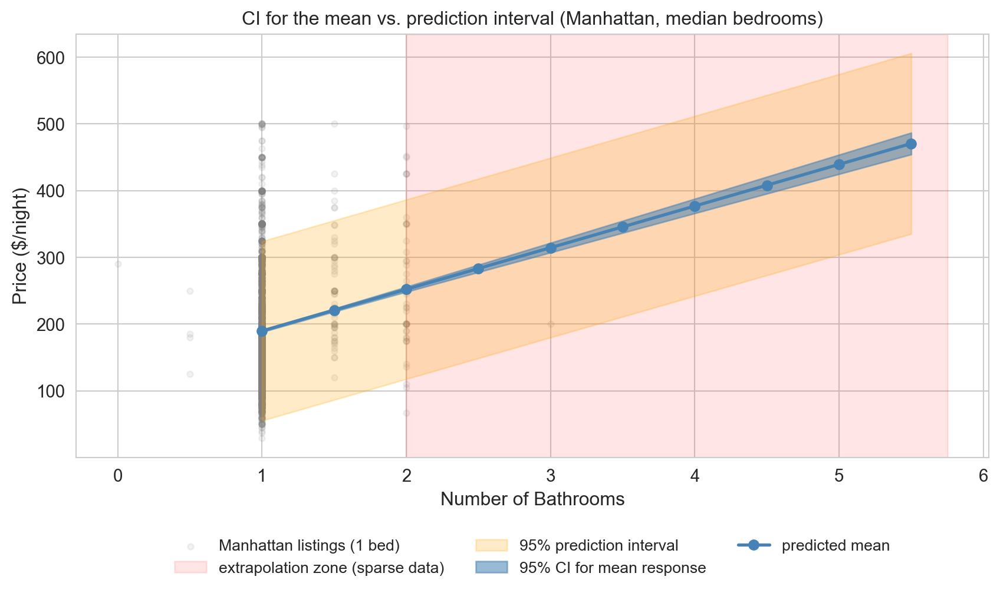
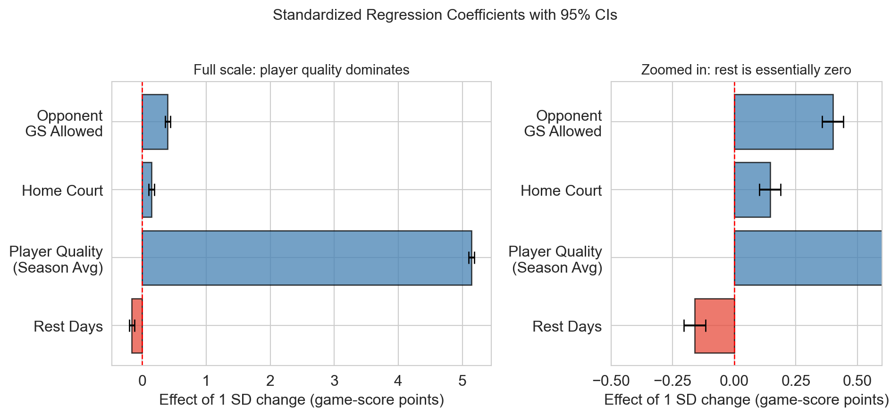
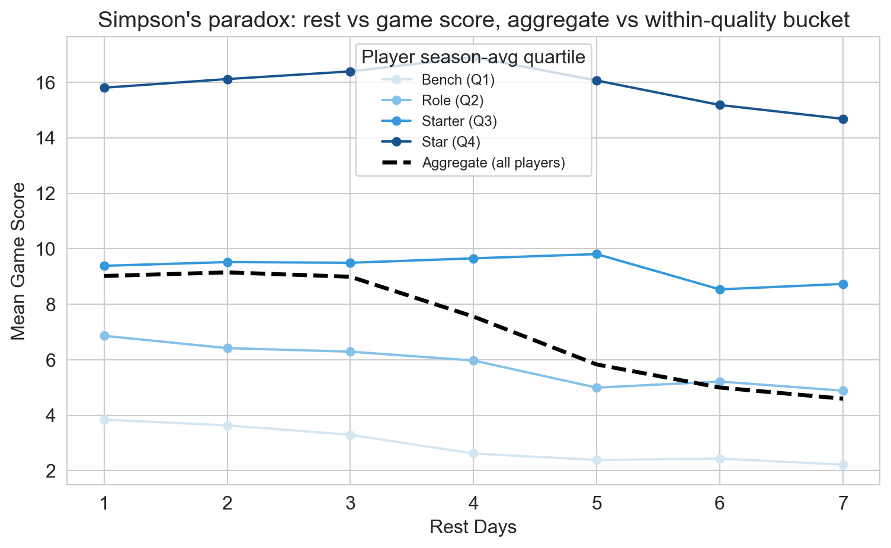
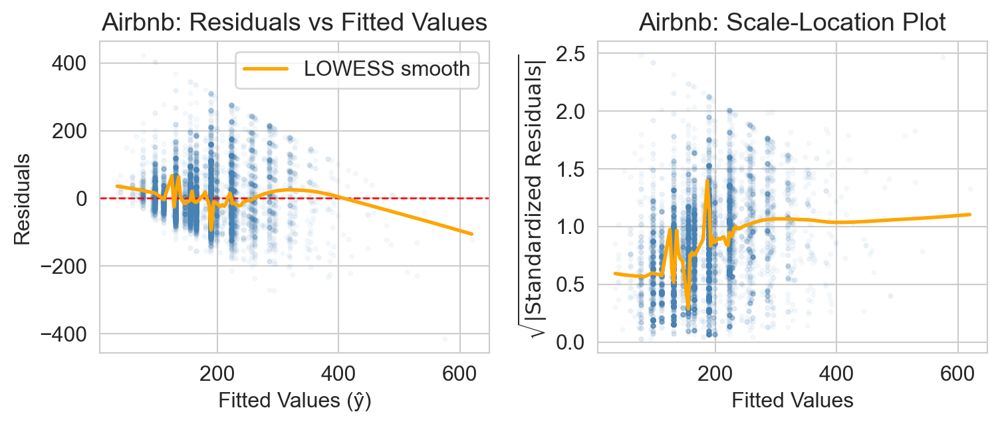
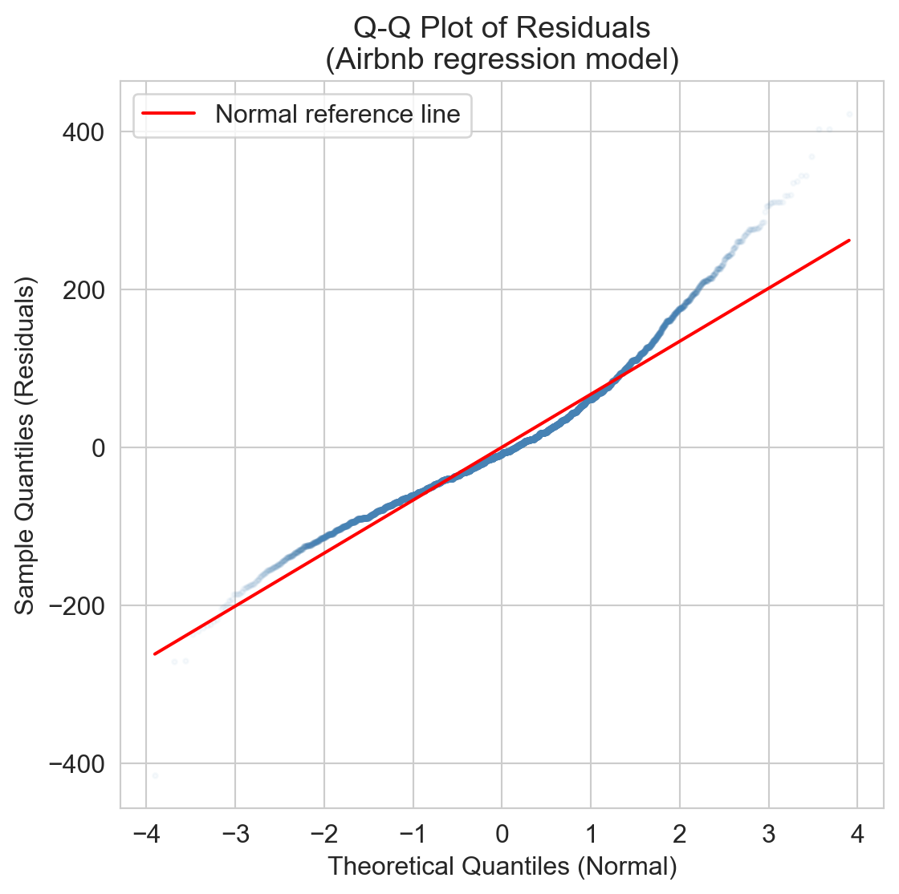
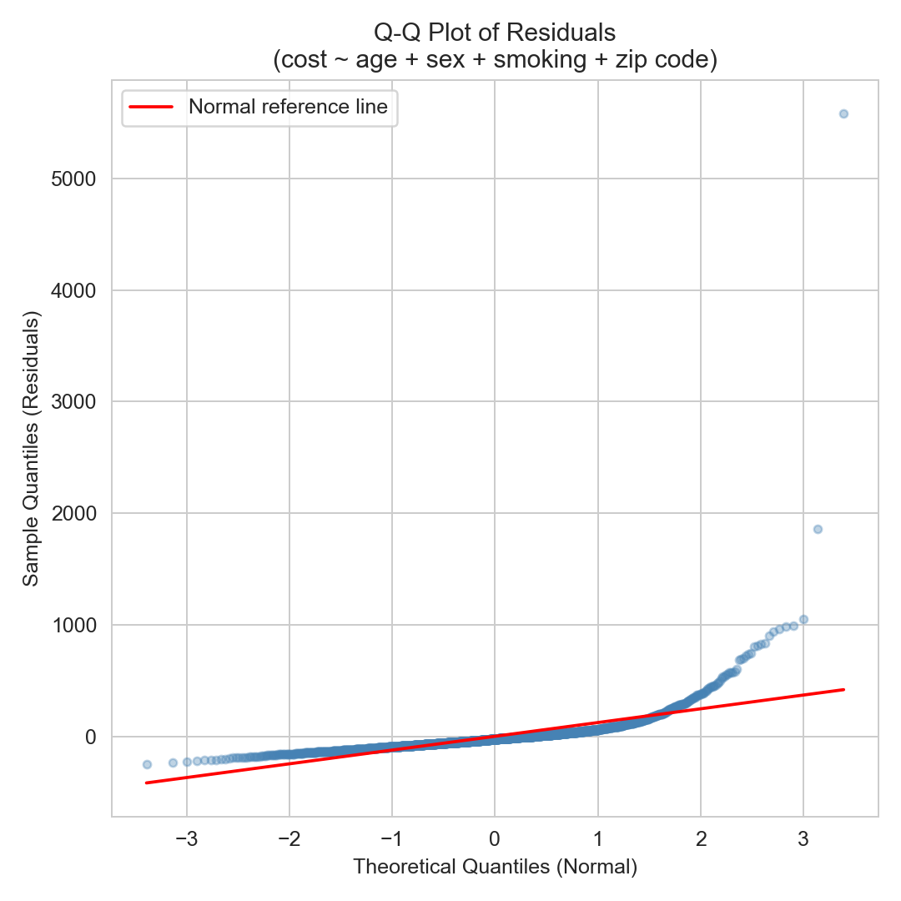
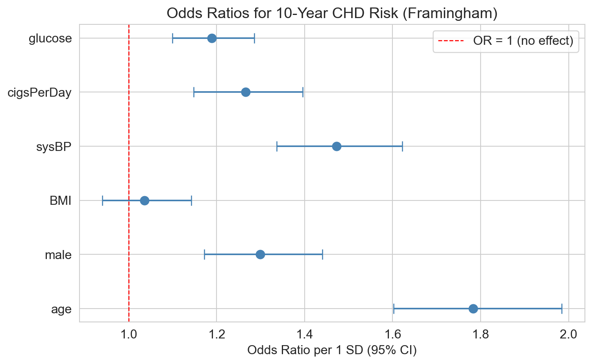

Lecture 12: Regression Inference + Diagnostics
MSE 125 — Applied Statistics
Wednesday, May 6, 2026
logistics
- HW 3 due Fri May 8
- project proposal feedback returned end of this week
- project midterm report due Friday May 15
the brief
Airbnb host, NYC
$50,000 renovation for a second bathroom?
listings with more bathrooms charge more — is the premium real, large enough to recoup, stable enough to bet on?
NBA front office
analytics team’s claim: rest boosts performance — restructure the schedule around it?
before they act, let’s check: does the data support that claim?
same toolkit. very different answers.
today
- Airbnb regression: read a regression table; t-test, CI, prediction interval
- NBA cautionary tale: significance vs practical importance, Simpson’s paradox
- diagnostics: do the assumptions hold?
- logistic regression: same template, z instead of t, odds ratios
three questions for every coefficient
| question | tool | doesn’t answer | |
|---|---|---|---|
| Q1 | nonzero? | t-test, p-value, CI excludes 0 | how big |
| Q2 | big enough? | coefficient, CI width, Cohen’s d | are assumptions met |
| Q3 | trustworthy? | residual plot, Q-Q, LINE | confounding |
we’ll walk through these questions twice:
- Airbnb answers yes to all → act on it.
- NBA shows equivocal answers → don’t act.
regression for decisions
Airbnb listings, NYC
n = 14,689 listings (after filtering)price by bathrooms and borough

obvious patterns: more bathrooms → higher price; Manhattan > Brooklyn > rest.
but bathrooms and bedrooms are correlated.
predict before you fit
sketch your guess for two numbers in the regression below — sign and rough magnitude.
- bathrooms coefficient ($/night per extra bathroom)
- Manhattan vs Bronx gap ($/night)
the regression table
coef std err t P>|t| [0.025 0.975]
Intercept 89.0594 3.487 25.541 0.000 82.225 95.894
C(borough)[T.Brooklyn] 26.4317 3.347 7.898 0.000 19.871 32.992
C(borough)[T.Manhattan] 78.9870 3.354 23.546 0.000 72.412 85.562
C(borough)[T.Queens] -3.6129 3.563 -1.014 0.310 -10.597 3.371
C(borough)[T.Staten Island] -8.6260 7.063 -1.221 0.222 -22.471 5.219
bathrooms 62.4408 1.860 33.566 0.000 58.795 66.087
bedrooms 34.0263 0.961 35.394 0.000 32.142 35.911every regression output you’ll see has these columns. we’ll walk through bathrooms end to end, then have a template for the rest of the course.
reading the table: 5 columns per row
| column | what it answers | bathrooms |
|---|---|---|
| coef | \hat\beta_j | $62.44 / bath |
| std err | how precise? | $1.86 |
| t | \hat\beta / \widehat{\text{SE}} | 33.6 |
| P>|t| | reject H_0: \beta=0? | < 0.001 |
| [0.025, 0.975] | 95% CI | [$58.80, $66.09] |
plus header: R^2 = 0.40, footer: Cond. No. = 35
interpreting the coefficients
- bathrooms ($62): each extra bathroom → ~$62 more per night, controlling for bedrooms and borough
- bedrooms ($34): similar story; smaller premium
- Manhattan vs Bronx (+$79): the borough premium
- Brooklyn vs Bronx (+$26): closer to Manhattan than to outer boroughs
- Queens, Staten Island: not distinguishable from Bronx at \alpha=0.05
“holding everything else constant, a one-unit increase in x_j is associated with a \hat\beta_j change in y”
would adding a bedroom raise YOUR listing price by $34?
think about what changes when you add a bedroom to your apartment.
the conditional null
coefficient null hypothesis
H_0: \beta_j = 0 \quad \text{vs} \quad H_a: \beta_j \neq 0
predictor j contributes nothing given the other predictors in this model
- conditional, not unconditional
- same predictor: significant in one model, not in another
- saw it in Ch 5: bathrooms coef shrank once bedrooms entered
the t-statistic — Gosset, again
coefficient t-test
t = \frac{\hat\beta_j}{\widehat{\text{SE}}(\hat\beta_j)}
ratio of an estimate to its estimated SE
- exactly Gosset’s situation from Ch 10
- estimating the SE → fatter tails → Student’s t
- n large here (\approx 15{,}000) → t^* \approx 1.96
- read p-values off a normal in practice
CI for the bathrooms coefficient
formula: \hat\beta_j \pm t^* \cdot \widehat{\text{SE}}(\hat\beta_j)
plug in: 62.44 \pm 1.96 \cdot 1.86 = [\$58.80,\ \$66.09]
bootstrap (Ch 8) on 1,000 resamples agrees:
formula CI: [$58.80, $66.09]
bootstrap CI: [$58.78, $66.04]$59–$66 per bathroom is the range we’re betting on.
decision: invest $50K?
- bathroom premium: $59–$66 / night (95% CI)
- typical occupancy: ~70% × 365 = 256 nights/year
- incremental revenue: ~$15,000–$17,000 / year
- payback: ~3 years
yes, the data support the renovation. but two caveats —
- association ≠ intervention: across-listings coefficient may overstate what adding a bathroom does
- diagnostics: does the regression’s promise of \pm 1.96 \cdot \text{SE} actually hold? (block 3)
prediction interval vs CI for the mean

- blue band: 95% CI for the mean price at this x
- orange band: 95% prediction interval for a single new listing
PI tracks the gray scatter where data is dense; extrapolated (red shading) at high bathroom counts.
NBA rest: significant, but not important
the NBA question
does extra rest help an NBA player’s game score?
what tangles a raw comparison?
- bench players get more rest (DNPs are “rest” by another name)
- stars get rested before tough opponents
- injured players return after long absences
so we control for player quality, opponent strength, home/away.
fit, then read
coef std err t P>|t| [0.025 0.975]
Intercept -0.0072 0.071 -0.101 0.919 -0.146 0.131
REST_DAYS -0.1531 0.022 -7.020 0.000 -0.196 -0.110
PLAYER_SEASON_AVG 1.0163 0.005 192.471 0.000 1.006 1.027
HOME 0.5022 0.057 8.764 0.000 0.390 0.614
OPP_GS_ALLOWED 1.0049 0.011 87.953 0.000 0.982 1.027REST_DAYS: \hat\beta = -0.15, p < 0.001. statistically significant. done?
but check the size
Cohen's d = -0.0195 SDCohen’s d
coefficient divided by response SD — how many SDs of the outcome does a one-unit predictor change move the prediction
significance ≠ importance
| NBA REST_DAYS | Airbnb bathrooms | |
|---|---|---|
| coefficient | -0.15 | $62.44 |
| p-value | < 0.001 | < 0.001 |
| 95% CI excludes 0 | yes | yes |
| Cohen’s d | -0.02 | 0.30 |
| practically meaningful? | no | yes |
“statistical significance is no substitute for practical importance.”
a sports analytics team comes to you and says:
“we ran a regression and found a negative coefficient for rest days — extra rest hurts performance, p < 0.001”
before they act, what questions should you ask?
standardized coefficients

player quality dominates. REST_DAYS barely clears zero.
variable names can deceive
we called it OPP_GS_ALLOWED = mean game score players post against this opponent
- high value = porous defense (opponents post big numbers)
- low value = stingy defense
coefficient: +1.00 — facing a porous defense → higher game score.
confounding made visible

aggregate slope (dashed) steeper than within-quality slopes (colored).
adding PLAYER_SEASON_AVG is the algebraic version of switching from the dashed line to the colored ones — Simpson’s paradox in regression form.
association, not causation
regression controls for measured covariates. it does not estimate causal effects.
coaches choose when to rest:
- DNP after a soft loss ≠ DNP before a back-to-back
- rest before a tough opponent ≠ rest before a cupcake
Q3: is the inference trustworthy?
LINE conditions
LINE
assumptions for OLS inference:
- L linearity
- I independence
- N normal residuals
- E equal variance (no heteroscedasticity)
each letter has a diagnostic signature. residual plot covers L and E; Q-Q plot covers N; I needs you to ask whether rows are clustered.
residual plots: do residuals have constant spread?

Airbnb: spread fans out as fitted price grows (“funnel”). mild heteroscedasticity.
Q-Q plot: are residuals normal?

Airbnb residuals are right-skewed: prices have a hard floor at $0 but a long right tail. fix: log-transform price.
diagnostics catch statistical problems, not systematic ones
Warning
residual plots, Q-Q plots, and the LINE conditions catch statistical problems: non-normality, heteroscedasticity, the wrong functional form
they do not catch the systematic problems that bias a coefficient as an answer to a causal question:
- selective treatment assignment
- omitted variables
- model misspecification you haven’t checked
CIs widen with sample noise or omitted variables.
they do necessarily widen with confounding.
you fit a regression for monthly health-insurance claim costs:
cost ~ age + sex + smoking + zip code.
the Q-Q plot of residuals is on the right.
which LINE assumption is failing?
which fix would you try first?

inference for logistic regression
logistic regression: same recipe
from Ch 7: logistic models a binary outcome via the log-odds.
| linear regression | logistic regression |
|---|---|
| t = \hat\beta_j / \widehat{\text{SE}} | z = \hat\beta_j / \widehat{\text{SE}} |
| exact t_{n-p-1} under LINE | asymptotic normal (Wald, MLE) |
| coef in original units | e^{\hat\beta_j} = odds ratio |
| [\hat\beta - 1.96 \cdot \text{SE},\ \hat\beta + 1.96 \cdot \text{SE}] | exponentiate to get OR CI |
read the table the same way; just remember z instead of t, and exponentiate at the end.
Framingham — odds of 10-year CHD

age, smoking, sysBP, glucose: OR > 1, CIs exclude 1
BMI: CI crosses 1 (not distinguishable from “no effect”)
interpreting the age OR
age \widehat{\text{OR}} \approx 1.78 per 1 SD; 1 SD of age \approx 9 years
linear in log-odds \Rightarrow multiplicative on odds
\frac{\text{odds at } x + \Delta}{\text{odds at } x} \;=\; \widehat{\text{OR}}^{\,\Delta / \sigma_x}
age 50 \to 60 is 10 years \approx \tfrac{10}{9} SD:
\frac{\text{odds}(60)}{\text{odds}(50)} \;\approx\; 1.78^{10/9} \;\approx\; 1.90
odds of CHD at 60 are about 2× the odds at 50
summary
- Airbnb: bathrooms +$62/night, CI [$59, $66] — decision-grade. act on it.
- NBA: rest “significant” at p<0.001, but Cohen’s d \approx -0.02 — don’t act on it.
- same machinery, very different verdicts. check effect size, not just p-value
- diagnostics catch statistical problems (non-normality, heteroscedasticity), not systematic ones (confounding, omitted variables)
- logistic = same template, z for t, exponentiate the coefficients
next: Ch 12.5 — classification meets inference
how do we ask “is this classifier real?” with the same toolkit?
- bootstrap CI for AUC — same idea as Ch 8, applied to classifier performance
- permutation test for “classifier beats random guessing”
- multiple-testing corrections over many logistic coefficients
same template throughout. only the test statistic and the response variable change.
feedback

what worked? what didn’t? what’s still confusing?